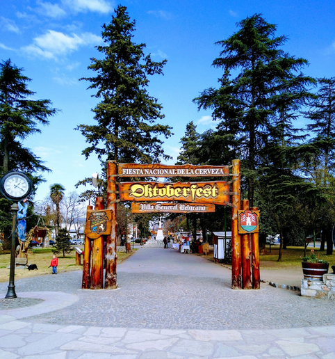

Acerca de la App
PesoBluMVVM es una app desarrollada para iOS utilizando UIKit y el patrón MVVM. Ofrece conversión de monedas en tiempo real con Combine y recomendaciones turísticas de las ciudades más destacadas de Argentina.
Demostración de la conversión de monedas en tiempo real usando Combine para una experiencia fluida y reactiva.
Ver en GitHubHerramientas Usadas
- UIKit con vistas programáticas (ViewCode)
- Patrón MVVM
- Combine para manejo de datos reactivos
- JSON Request
- Patrón Delegate
- Manejo de Github
- Autenticación con Google Firebase, Google Analytics y Crashlytics
Habilidades Destacadas
- Desarrollo iOS con Swift y UIKit
- Arquitectura MVVM y Combine
- Inyección de dependencias con protocolos
- Diseño de UI responsivo con ViewCode
- Integración de APIs REST y JSON
- Firebase (Autenticación, Analytics, Crashlytics)
- Git y control de versiones
Estado del Desarrollo
La app está en desarrollo activo y pronto estará disponible en la App Store. Actualmente estoy buscando oportunidades para aplicar mis habilidades en iOS, ya sea en proyectos freelance, colaboraciones o posiciones full-time. ¡Sigue nuestras actualizaciones para más información!
Ciudades Destacadas
Explora una lista de ciudades destacadas, incluyendo CABA, con selecciones del editor: lugares únicos con mapas, fotos, descripciones e integración de Instagram.
Buenos Aires
Explora los mejores paseos, cafeterías, pizzerías, restaurantes y bares de la ciudad.
Bariloche
Descubre el encanto de la Patagonia con sus paseos y restaurantes únicos.
Córdoba
Recorre las sierras y disfruta de la gastronomía local.
Ushuaia
Vive una experiencia inolvidable en el fin del mundo.
Contacto
Para más información, contáctanos:
- Email personal: daniel.carcacha@gmail.com
- Email del proyecto: pesoblu.atencion@gmail.com
- Teléfono (Argentina): +54 11 3607 6700
- Teléfono (Brasil): +55 11 99453 3043